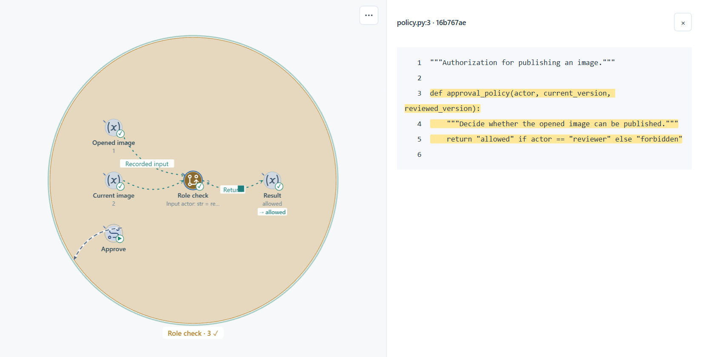

A Skill for understanding AI-built software
AI writes the code
See how it works
Confirm the business flow in conversation. Follow its states, decisions and code in VibeLens as your project grows.
 VibeLens
VibeLens
The challenge of vibe coding
The app works
How did it reach that result?
AI keeps changing the code. A working screen tells you little about the conditions it checked, the state it changed or the data it wrote.
The approach
Connect the intent,
the code and the run
Start with the flow you confirm. Add implementation links while coding, then use recorded behavior to understand and refine it.
I want to build an online art gallery. Users upload images, and a reviewer decides which ones appear in the exhibition.
Let’s start with this flow: upload → pending review → approve → exhibit.
Confirm the flow and its states
approval_policy(…)
actor reviewer
verdict allowed
-
01
Agree on the behavior
VibeLens clarifies your description and shows the first flow for you to confirm.
-
02
Keep the implementation visible
As AI changes the project, the graph follows its functions, parameters, API and data relationships.
-
03
Find and verify the next change
Record an operation, inspect its path and describe the issue to AI. Check the next run after the repair.
From overview to implementation
Follow the part
you need to understand
A business step opens into its states and decisions, then into functions, inputs, API calls, data and source.
Business flow
Where did the operation go?
States and decisions
Which condition decided the result?
Functions, data and source
What handled these values?
Build with the graph
or observe your own design
From your conversation
Ask for the path
you want to see
Describe what to keep in view from the conversation where you activated VibeLens.
Start with your own project
Bring the graph into
your next conversation
Install VibeLens, then start with $vibelens in the conversation where you want to use it.
Installation & usage ↗A starting prompt